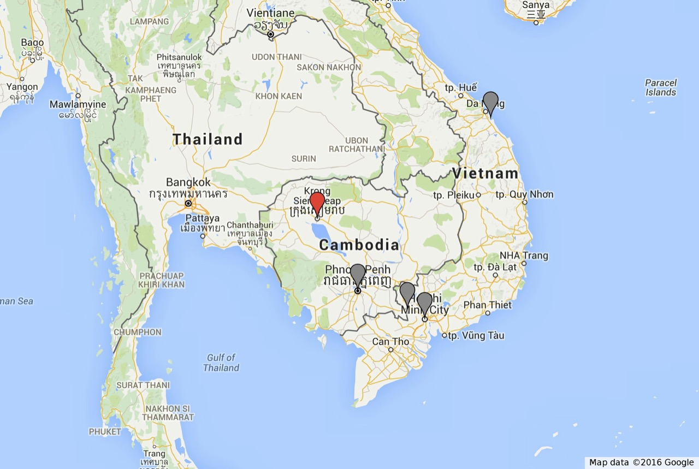

木村 哲朗
1980年12月31日・東京都文京区生まれ

バックパッカーとは
ツアーに頼らない旅が好き
バックパッカーとは
移動手段や宿泊先は自分で確保
バックパッカーとは
あまり予定を立てずに行動する
バックパッカーとは
ゴロゴロ引いたら負けかなと思っている
バックパッカーとは
いい年したおっさんが自称するとイタい
個人自由旅行の魅力
どこへだって行ける
個人自由旅行の魅力
自分のペースで過ごせる
個人自由旅行の魅力
訪れた土地の魅力を存分に味わえる
個人自由旅行の魅力
コストを抑えられる
※ ただしアジアに限る
個人自由旅行の魅力
割とどうにかなる
東南アジアの今を体験する
7日〜10日程度のモデルコース


ホーチミン
活気あふれるベトナムの大都市
ホーチミン
- バイクの数がやばい
- 子どもが多い
- 食べ物が美味しい

ホイアン
のんびりとした街でぼけーっとする

ホイアン
- 古い街並みが楽しい
- ビーチが綺麗
- ゆったりしている

カンボジア
長距離バスに14時間乗って
カンボジア
- 道路事情と街並み
- 国道沿いに並ぶ高床式の家
- 一つの電球の下に集う家族

アンコール・ワット
かつての繁栄に思いをはせて
アンコール・ワット
- 想像以上にデカい
- 圧倒的な異文化の情緒
- また来たいと思わせる魅力
旅をしよう！
人生は一度っきり
まずは航空券を買おう！
宿探しはあとからでおｋ
予定なんてなくていい
身の丈に合った旅こそが楽しい
バイブル

最後に…
バックパッカーの挨拶
Good luck!
良い旅を…！